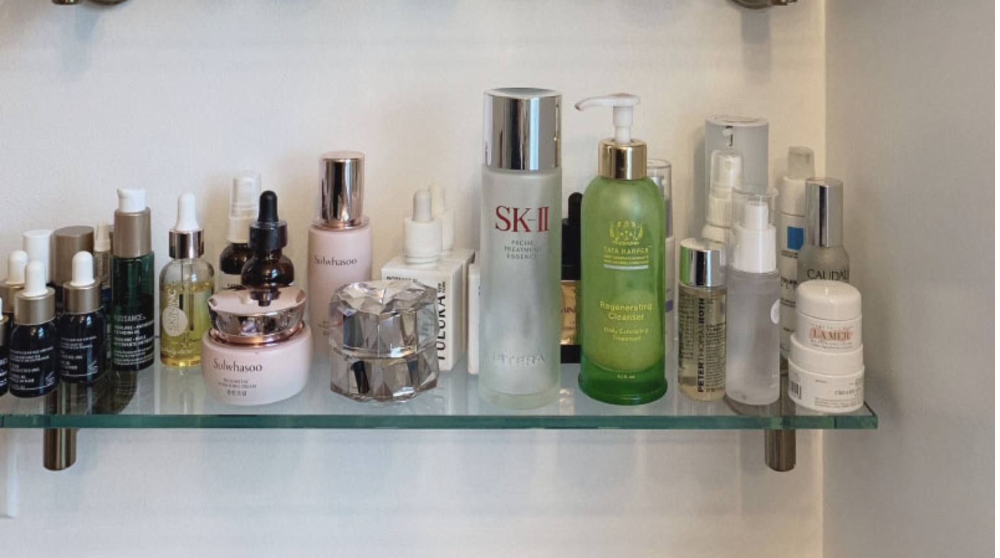

Just in: Fenty Beauty
Women of color deserve and need it: 40 new Fenty Foundation Shades for the lightest and darkest complexions, as well as all those in between.
Winter Beauty Edit
Tis' the season for winter nights and salty hams, but also dry-skin and bloated bodies. Womp! Our team dishes their secrets to keep glowy, calm skin throughout the toughest of witners.

Been about it & I am still about it.
Our cabinets constantly evolve through seasons and life changes, but there are always those few products we hold near and dear to our hearts. These are the skincare products we cannot get enough of.